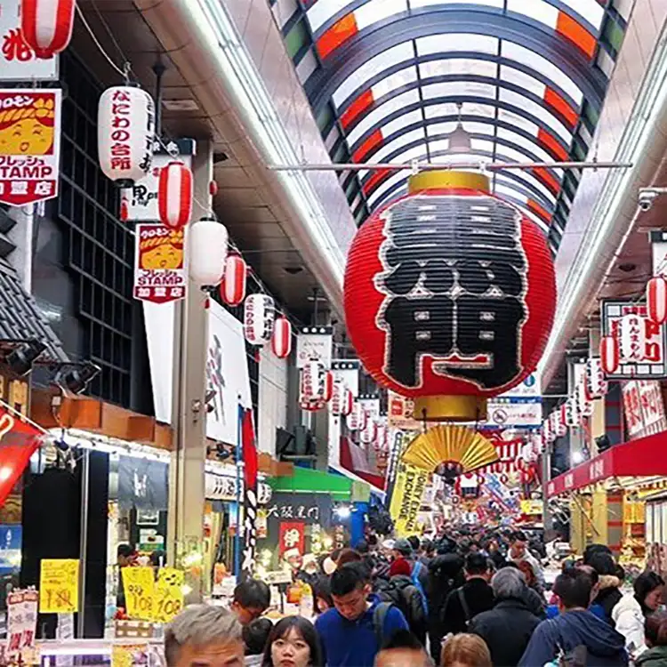
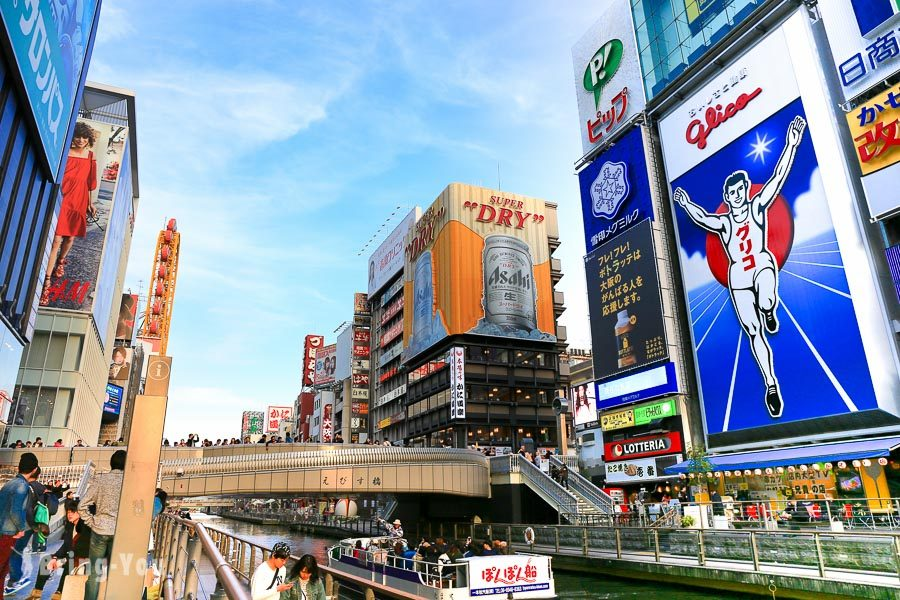

Attraction Features
 「黑門市場」位於大阪市中心，南區的日本橋附近。約580公尺的拱廊裡林立著鮮魚店、蔬果店、肉舖、點心店等約170家店舖。作為支撐大阪人日常飲食的廚房相當出名，平常1天有3萬人、年底則有15萬人前來買東西。據推測從江戶時代1822年起，這裡就開始買賣鮮魚，到明治末期為止都比照附近的寺院而被稱為圓明寺市場。因為圓明寺的山門呈黑色，所以後來便被稱為黑門市場。原本以專業廚師聚集的市場而聞名。近年來一般顧客也逐漸增加，有許多觀光客來享受著邊走邊吃的樂趣。 ‧深受廚師信賴，銷售高品質鮮魚的鮮魚店 據說江戶時代起便有魚販聚集在此買賣鮮魚的黑門市場，自古以來作為以鮮魚為主的市場而繁榮，因此現在仍有許多家鮮魚店。夏季的海鰻、冬季的河豚是名產，有1成的鮮魚店銷售河豚。高級日式餐廳的大廚也會來這個市場進貨，在這裡能夠買到既新鮮又高品質的魚。 ‧抱持著吃到倒的覺悟再前往這個邊走邊吃天國 不只是業者，黑門市場也對一般顧客敞開門戶。店門口陳列著各種令人垂涎欲滴的新鮮食物，有朝氣的店員會大聲喊「歡迎光臨！」招攬顧客。也有不少店家為了方便顧客邊走邊吃，以竹籤串著的狀態來販賣，或者準備了內用區。 ‧為外國觀光客提供充實服務的遊客中心 2016年開張的「黑門遊客中心」裡，為近年來不斷增加的外國觀光客提供許多令其欣喜的服務。這裡有會說英文和中文的工作人員常駐，並且也準備了其他語言的手冊。還有設置外幣兌換機，就算身上日圓不夠也可以放心。另有提供配送至飯店及寄放行李等服務。
Details
 在走路八分鐘到達MyStays puremia 飯店(雙人房，1486/人)放置行李 再走10分鐘即可到達東梅田地鐵站，搭乘谷町線到天神橋筋六丁目 走路3分鐘前往大阪今昔館(周遊卡)。 從天神橋筋六丁目搭乘谷町線到谷町四町目，走路16分鐘參觀大阪城天守閣(周遊卡)。從谷町四丁目搭中央線到堺筋本町轉乘堺筋線到惠美須町，在走路2分鐘前往通天閣(周遊卡)。從惠美須町搭乘堺筋線到日本橋站轉乘千日前線到Namba站，走路8分鐘可到黑門市場，走路2分鐘可以到達道頓崛，可體驗道頓崛水上觀光船(周遊卡)。從Namba搭乘御堂筋線到心齋橋。從心齋橋搭乘中央線到長崛橋轉乘堺筋線到天神橋筋六丁目可逛天神橋筋商店街。從天神橋筋六丁目搭乘谷町線到東梅田，再走16分鐘前往梅田空中花園(周遊卡-摩天輪)。